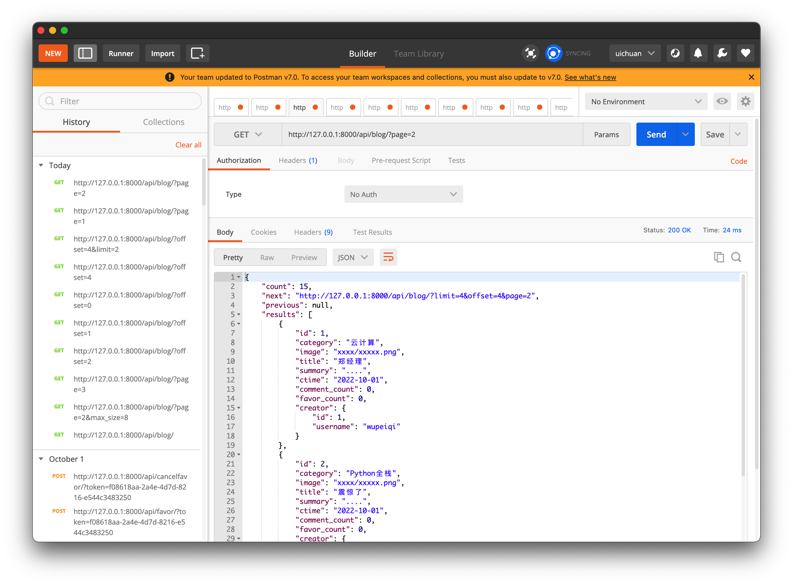

10.restframework Pager
restframework中提供了优秀的分页组件
在settings.py中，填写关于restframework的配置
REST_FRAMEWORK = {
"UNAUTHENTICATED_USER": None,
"PAGE_SIZE": 4
}
1.PageNumberPagination
from rest_framework.pagination import LimitOffsetPagination
class BlogView(APIView):
authentication_classes = [BlogAuthentication, ]
def get(self, request, *args, **kwargs):
""" 博客列表 """
# 1.读取数据库中的博客信息
queryset = models.Blog.objects.all().order_by("id")
from rest_framework.pagination import LimitOffsetPagination
pager = LimitOffsetPagination()
res = pager.paginate_queryset(queryset, request, self)
# total_res = pager.get_paginated_response()
# 2.序列化
ser = BlogSerializers(instance=res, many=True)
response = pager.get_paginated_response(ser.data)
# 3.返回
return response
# 获取到所有queryset对象
queryset = models.Blog.objects.all().order_by("id")
from rest_framework.pagination import PageNumberPagination
# 实例化分页对象&传入参数（数据queryset,request对象,view）
pager = PageNumberPagination()
res = pager.paginate_queryset(queryset, request, self)
ser = BlogSerializers(instance=res, many=True)
response = pager.get_paginated_response(ser.data)
return response
return response
这里的response经过了get_paginated_response方法的封装，具体过程：
class LimitOffsetPagination(BasePagination):
...
def get_paginated_response(self, data):
return Response(OrderedDict([
('count', self.count),
('next', self.get_next_link()),
('previous', self.get_previous_link()),
('results', data)
]))
get_paginated_response在返回时调用了restframework的response，
并且封装了更多的与分页相关的参数返回给调用它的API，
如果希望对封装的参数进行自定制，或者增加一些其他的参数，
可以写一个子类MyLimitOffsetPagination并且
重写get_paginated_response(self, data)方法
class MyLimitOffsetPagination(LimitOffsetPagination):
...
def get_paginated_response(self, data):
return Response(OrderedDict([
('xxx',self.xxx)
('count', self.count),
('next', self.get_next_link()),
('previous', self.get_previous_link()),
('results', data)
]))

{
"count": 15,
"next": "http://127.0.0.1:8000/api/blog/?limit=4&offset=4&page=2",
"previous": null,
"results": [
{
"id": 1,
"category": "云计算",
"image": "xxxx/xxxxx.png",
"title": "郑经理",
"summary": "....",
"ctime": "2022-10-01",
"comment_count": 0,
"favor_count": 0,
"creator": {
"id": 1,
"username": "wupeiqi"
}
},
{
"id": 2,
"category": "Python全栈",
"image": "xxxx/xxxxx.png",
"title": "震惊了",
"summary": "....",
"ctime": "2022-10-01",
"comment_count": 0,
"favor_count": 0,
"creator": {
"id": 2,
"username": "cxr"
}
},
......
]
}
2.LimitOffsetPagination
from rest_framework.pagination import LimitOffsetPagination
class BlogView(APIView):
authentication_classes = [BlogAuthentication, ]
def get(self, request, *args, **kwargs):
""" 博客列表 """
# 1.读取数据库中的博客信息
queryset = models.Blog.objects.all().order_by("id")
from rest_framework.pagination import LimitOffsetPagination
pager = LimitOffsetPagination()
res = pager.paginate_queryset(queryset, request, self)
# total_res = pager.get_paginated_response()
# 2.序列化
ser = BlogSerializers(instance=res, many=True)
response = pager.get_paginated_response(ser.data)
# 3.返回
return response
......
LimitOffsetPagination更加适合滚动翻页的情况
LimitOffsetPagination，滚动翻页
/accounts/?offset=2&limit=10
/accounts/?offset=10&limit=10
/accounts/?lastid=10&offset=0&limit=10
/accounts/?lastid=20&offset=0&limit=10